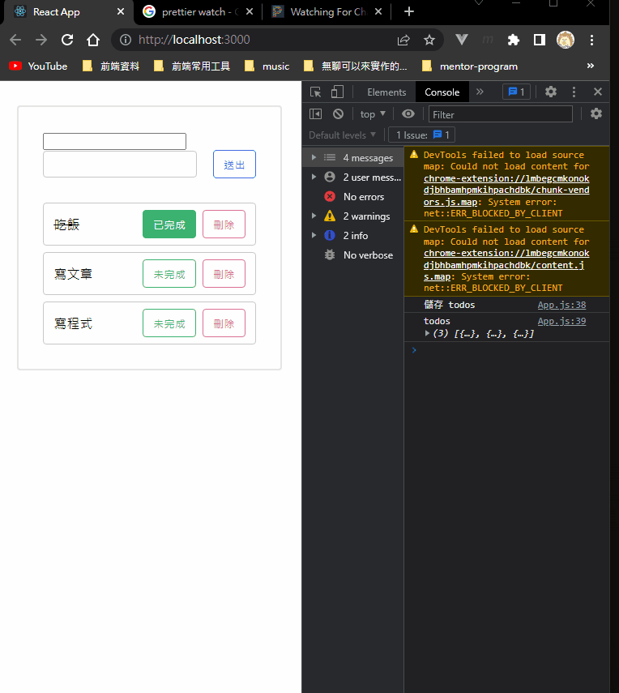

據說是最難理解的一個。
基本概念
React render 完，瀏覽器 paint 出畫面以後，你想做什麼？
可以想成是 render 完以後的 callback function，你可以在裡面寫要做的事情。
一樣拿 todo list 來舉例，假設我希望有 localstorage 的功能，直覺的做法可能是這樣子：
1 | // 因為 setTodos 是非同步的，所以沒辦法直接用 setItem(todos) 的方式來存 |
就是在每個會「改變 todos 的 state 的地方」都加上儲存紀錄的處理。不過這樣不就跟寫 Vanilla JS 沒兩樣了嗎？所以其實有更好的做法，就是透過 useEffect：
1 | useEffect(() => { |
對，就是這麼煞氣的用一行來輕輕鬆鬆解決。但重要的是要知道為什麼可以這樣做？
這是因為 useEffect 的執行時間是在每一次 render 完以後才被執行。所以這整個流程是這樣子：
- 第一次載入，render 完以後，把目前 todo 的 state 儲存到
localStorage - 新增一筆 todo，更新了 state，觸發 re-render
- 重新 render 完，把畫面 paint 出來後，再次執行
useEffect useEffect根據目前 todo 的 state 把東西儲存到localStorage
所以你知道原因了嗎？要 render 東西以前必須先有 state，而 useEffect 是在 render 完以後才被執行，那不就代表在 useEffect 裡的 state 一定是目前畫面上最新的狀態嗎？
所以在這個時候去設定 storage 絕對不會出錯，而且也是個很不錯的時機。
關於 useEffect 的第二個參數，為什麼需要它？
附註：這個參數叫做「dependencies」
假設一個 Component 中有多個 state，而在用 useEffect 時又沒有指定「第二個參數」，告訴 React 你要觀察哪個 state 的話，就會在任何 state 改變時都被觸發（因為 state 改變就會重新 render，重新 render 就會再次觸發一次 useEffect）
以剛剛 todo list 的例子來說，我的 component 中可能有 inputValue 跟 todos 這兩個 state。
現在當我輸入一個字就會觸發一次 useEffect，因為我修改了 inputValue 的 state，而 state 變了就會重新 render，重新 render 就會再執行一次 useEffect，像下圖這樣：
但怎麼看都不合理嘛！應該要在 todo 這個 state 有改變時再做儲存的動作就好，而不是在任何 state 改變都去儲存。
因此這就是第二個參數的用途，讓你指定哪一個 state 改變時才執行這個 useEffect（這邊是為了方便解釋才這樣說。精確一點的說法是根據 dependencies 的內容是否有變來決定，有變的話才會觸發 useEffect）
接著來改寫剛剛的範例：
1 | useEffect(() => { |

加上這個參數後就能確保只有在 todos 改變時才去觸發 useEffect，避免了剛剛的問題。
所以人家常說的一次式 useEffect
只要你有弄懂剛剛的範例，就能明白為什麼下面這樣寫法只會執行一次：
1 | useEffect(() => { |
因為 dependencies（陣列裡面）的內容永遠都是空的，所以不論接下來發生什麼事情它都不會改變，當然就不會再次觸發。